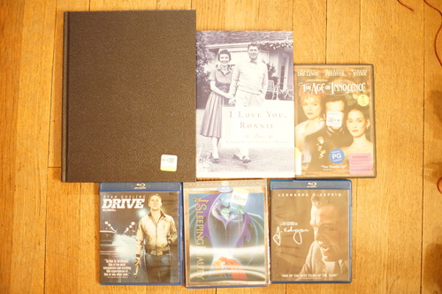
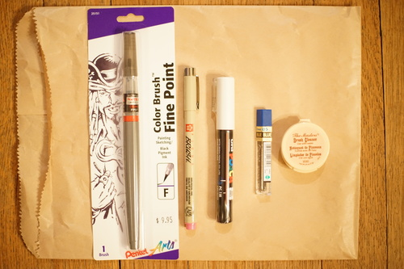
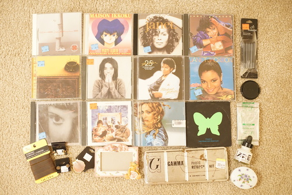

Did you guys hear the queen from the minions movie died?? I didn't think she was capable of escaping from her immortality! But, Diana will always be the queen in our hearts.
While cleaning, I discovered my first copy of Photoshop! It's called IBM Magic Canvas. I don't see any videos about it on youtube. Was I the only one?? We have a ton of educational "games" that I can't remember playing. I do remember all the Humongous games and HOW MANY BUGS IN A BOX. I had so much fun with those.
I ventured out into the "big" city with my mom. I never realized how small the big cities out here are until a few years ago. They're really nothing compared to any city in the Seattle area.
i mostly only found movies at the goodwills we stopped by. I've been looking for Drive ever since I found out Real Human Bean was from a movie.
Did i need it? no!
I already owned a paperback of this, but my mom couldn't let me leave the hardback we found! This book was so cute.
We're upgrading Ryan from his VHS copy
For Ryan, sealed.
I discovered an autistic art supply store while we were out! I bought a pentel brush pen, a rose sakura pigma brush pen, brush cleaner, blue .5mm lead refills, and a white POSCA marker.
I've been wanting a brush pen for a while and my fountain pen ink in daiso pen experiment was very messy and didnt work well. maybe my daiso brush pen was just too leaky for this purpose.
they had a (full!) posca display but no copic display. I tried the spectrum AD markers but I couldnt get them to blend so I skipped buying any. they even had gouache singles! I'm still too cheap to buy them ;_;
I've now been to hobby lobby, joanns, a smaller craft store, and michaels without wanting to buy anything. my pickiness is saving money!
I found a few more CDs. All $1 each. Just imagine the beautiful cover art because I didn't take a photo.
I'm nervous about the scratches on this one but I want more Wang Chung and I NEVER see them
The greatest hits album was very fun to listen to so I'm buying a real album.
Wow nice blink-182 album name guys
I was really hoping to find earlier albums but this one is still in the 80s so I'll try it. I was not so into his 1992 album.
And... a pile of stuff. Some of this is from the last blog post but didn't get into a photo for it.
What is this?!
This disc is somewhat scratched but I want this album so bad. Pls be as great as Post *prays*
I can't BELIEVE I found 2 wang chung albums in a week.
Ryan: "I'm looking for a Madonna CD. Ray of Light"
Me: "Done."
Seriously? What is this name?
And some non CD buys:
a perfect excuse to get out my paints!
I will be on a quest to see if these will work for faceups. They appear to be water based.
I just wanted the ink tbh
Already mentioned...
Expired in 7/2020
I get home and my computer starts complaining about ATA6 and of course that's my DVD drive. I must have jiggled the cable wrong while checking all of my loose hard drives a while back. I'm using the usb DVD reader I bought a month or so ago but it's definitely usb 2.0 slow. Not great when I have a pile of CDs to rip...